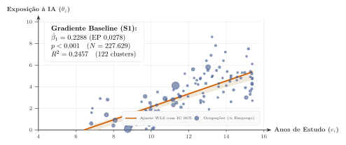
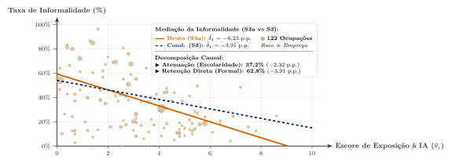
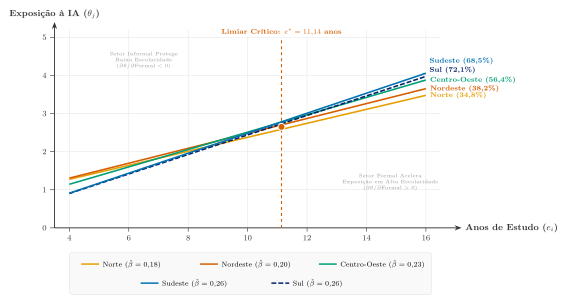

Exposição à Inteligência Artificial em um Mercado de Trabalho Informal
Teoria e Evidências Microeconômicas para o Brasil
Motivação: A Dualidade do Mercado de Trabalho Brasileiro
O debate global sobre IA:
- Foco em economias avançadas com alta formalidade e predomínio de serviços corporativos (Eloundou et al. 2024).
- Premissa implícita: difusão tecnológica homogênea.
A realidade estrutural do Brasil (PNAD Contínua 2026Q1):
- 39,2% de informalidade na força de trabalho ocupada.
- 35,7 milhões de trabalhadores (35,0%) em ocupações de baixíssima exposição à IA (\(\theta_j \le 2\)).
- Forte heterogeneidade regional: formalidade varia de 40% (MA/PA) a 65% (SP/SC).
Questão Central
Como a coexistência entre informalidade e capital humano molda a exposição à IA em uma economia em desenvolvimento?
Mecanismo Proposto
A IA é complementar ao capital humano formal, mas a informalidade atua como barreira de absorção tecnológica.
Três Perguntas de Pesquisa
- Gradiente Educacional:
- Trabalhadores mais escolarizados selecionam-se em postos de trabalho mais expostos à IA?
- Esse gradiente resiste ao controle de rendimento e covariadas mincerianas?
- O Canal da Informalidade (Mediação):
- A baixa exposição informal é apenas reflexo de menor escolaridade, ou existe um efeito direto do capital organizacional formal?
- Polarização Espacial & Heterogeneidade Regional:
- Mercados regionais com maior profundidade formal ampliam ou reduzem a distância de exposição entre trabalhadores qualificados e não qualificados?
Modelo Teórico de Alocação e Arbitragem
Modelo de Designação Ocupacional (Assignment Model)
Trabalhadores e Ocupações:
- Escolaridade contínua: \(e \in [e_{\min}, e_{\max}]\).
- Ocupações com exposição tecnológica: \(\theta_j \in [0, 10]\).
- Regimes contratuais: \(s \in \{F, I\}\) (Formal vs. Informal).
Função de Produção Primitiva:
\[y_{js}(e) = g(e)\big(1 + \kappa_s \theta_j\big)\]
com \(g'(e) > 0, g''(e) \le 0\) e \(\Delta\kappa \equiv \kappa_{\text{org}} - \kappa_{\text{ind}} > 0\).
Supermodularidade Estrita
\[\frac{\partial^2 y}{\partial e \partial \theta} = g'(e)\,\kappa_s > 0\]
A IA complementa o capital humano do trabalhador.
Estrutura de Custos Institucionais:
- Formalização impõe custo fixo \(c > 0\) por trabalhador (Ulyssea 2018).
- \(w_{jF}(e) = y_{jF}(e) - c\) e \(w_{jI}(e) = y_{jI}(e)\).
Arbitragem Formal-Informal e Previsões Teóricas
Limiar de Formalização Ocupacional:
\[w_{jF}(e) \ge w_{jI}(e) \iff g(e)\,\Delta\kappa\,\theta_j \ge c\]
\[ \boxed{e^*_j = g^{-1}\left(\frac{c}{\Delta\kappa\,\theta_j}\right)} \quad \implies \frac{\partial e^*_j}{\partial \theta_j} < 0 \]
- Ocupações com maior \(\theta_j\) reduzem a exigência educacional mínima para viabilizar a formalidade corporativa.
Proposição 1 (Gradiente Positivo)
Por supermodularidade estrita (Topkis, 1998), a alocação de equilíbrio \(\theta^*(e)\) é monotonicamente crescente em \(e\): \(\beta_1 > 0\).
Corolário 1 (Mediação Parcial)
A associação bruta exposição–formalidade atenua-se ao condicionar na escolaridade, mas retém coeficiente direto significante (\(\Delta\kappa > 0\)).
Dados Microeconômicos e Estratégia Empírica
Microdados da PNAD Contínua e Construção do Escore \(\theta_j\)
Base Amostral:
- IBGE PNAD Contínua 2026Q1: \(N = 227.629\) indivíduos ocupados, representativos de 102,1 milhões de trabalhadores.
- Pesos amostrais complexos (
weight/V1028) aplicados em todas as estimações (WLS).
Harmonização Internacional do Escore \(\theta_j\):
- Medida O*NET-SOC (0–10) (Eloundou et al. 2024).
- Crosswalk: \(\text{O*NET} \to \text{ISCO-08} \to \text{COD (IBGE)}\).
- \(G = 122\) grupos ocupacionais a 4 dígitos.
Correção de Moulton (1986)
Erros-padrão agrupados por 122 clusters ocupacionais (Cameron, Gelbach e Miller, 2008).
Controles Mincerianos
Idade, idade\(^2\), dummy de gênero feminino e vetor de dummies de cor/raça (IBGE).
Especificações Econométricas Estimadas
S1 (Gradiente Baseline): \[\theta_{j(i)} = \alpha + \beta_1 \, e_i + \mathbf{X}_i'\boldsymbol{\gamma} + \varepsilon_i\]
S2 (Controle de Rendimento Habitual): \[\theta_{j(i)} = \alpha + \beta_1 \, e_i + \beta_2 \, w_i + \mathbf{X}_i'\boldsymbol{\gamma} + \varepsilon_i\]
S3a & S3 (Mediação da Informalidade): \[\begin{aligned} \text{S3a:} \quad \text{informal}_i &= \alpha + \delta_1 \, \theta_{j(i)} \\ &\quad + \mathbf{X}_i'\boldsymbol{\gamma} + \varepsilon_i \\ \text{S3:} \quad \text{informal}_i &= \alpha + \delta_1 \, \theta_{j(i)} + \delta_2 \, e_i \\ &\quad + \mathbf{X}_i'\boldsymbol{\gamma} + \varepsilon_i \end{aligned}\]
S4 (Interação Regional Leave-One-Out): \[\begin{aligned} \theta_{j(i)} = \alpha + \beta_1 \, e_i &+ \beta_2 \big(e_i \times \text{formal}_{-i, u}^{\text{LOO}}\big) \\ &+ \beta_3 \, \text{formal}_{-i, u}^{\text{LOO}} + \mathbf{X}_i'\boldsymbol{\gamma} + \varepsilon_i \end{aligned}\]
Resultados Empíricos e Mecanismos
Resultado 1: Gradiente Escolaridade–Exposição (\(\hat{\beta}_1 = 0{,}23\))
Estimação no Nível Individual (\(N = 227.629\)):
- S1 Baseline: \(\hat{\beta}_1 = \mathbf{0{,}2288} \approx \mathbf{0{,}23}\) (EP \(0{,}028; p < 0{,}001; R^2 = 0{,}246\)).
- Cada 4 anos de estudo elevam a exposição em \(\sim 1\) ponto no escore 0–10.
S2 com Controle Salarial:
- Escolaridade: \(\hat{\beta}_1 = \mathbf{0{,}2097} \approx \mathbf{0{,}21}\) (EP \(0{,}026\)).
- Rendimento: \(\hat{\beta}_2 = \mathbf{0{,}043}\) por R$ 1.000 (\(p < 0{,}001\)).
Limites de Oster (2019)
\(\delta = \mathbf{1{,}64} > 1\) sob \(R_{\max} = 1{,}3 R^2\): seleção em não-observáveis precisaria ser 64% superior a todos os controles observáveis para anular \(\hat{\beta}_1\).

Resultado 2: Mediação Parcial da Informalidade (Corolário 1)
Decomposição Linear Exata:
- S3a (Bruta): \(\hat{\delta}_1 = \mathbf{-6{,}23}\) p.p. por ponto de \(\theta_j\) (EP \(0{,}99; p < 0{,}001\)).
- S3 (Condicional): \(\hat{\delta}_1 = \mathbf{-3{,}91}\) p.p. (EP \(0{,}96\)) e \(\hat{\delta}_2 = \mathbf{-2{,}61}\) p.p. por ano de estudo.
Decomposição de Canais
- 37,2% Atenuação: Explicada pela seleção educacional em tarefas cognitivas.
- 62,8% Efeito Direto: Atribuível a governança, escala de dados e capital organizacional (\(\Delta\kappa > 0\)).

Resultado 3: Polarização Espacial e Formalidade Regional (S4)
Estimativas da Interação Regional (S4):
- Interação \(\text{Esc} \times \text{Formal}\): \(\hat{\beta}_2 = \mathbf{+0{,}28}\) (EP \(0{,}06; p < 0{,}001\)).
- Efeito Principal Formalidade: \(\hat{\beta}_3 = \mathbf{-3{,}10}\) (EP \(0{,}77; p < 0{,}001\)).
Derivada Marginal Total:
\[\frac{\partial \theta}{\partial \text{formal}_u} = -3{,}10 + 0{,}28 \, e_i\]
Limiar Crítico de Polarização: \(e^* = 11{,}14\) anos
- \(e_i = 8\) anos (Fund.): \(\frac{\partial \theta}{\partial \text{formal}_u} = \mathbf{-0{,}86}\) ponto.
- \(e_i = 16\) anos (Sup.): \(\frac{\partial \theta}{\partial \text{formal}_u} = \mathbf{+1{,}38}\) ponto.

Bateria de Robustez Econométrica (R1–R7)
Testes de Sensibilidade:
- OLS Não-Ponderado (R1): \(\hat{\beta}_1 = 0{,}21\) (EP \(0{,}03\)).
- Winsorização 1%/99% (R5): \(\hat{\beta}_1 = 0{,}23\) (EP \(0{,}03\)).
- Exclusão p99 (\(N = 225.478\)): \(\hat{\beta}_1 = 0{,}22\) (EP \(0{,}03\)).
- Transformação \(\log(1+\theta)\) (R4): \(\hat{\beta}_1 = 0{,}07\) (\(p < 0{,}001\)).
- Exclusão dos 9 Grupos COD: \(\hat{\beta}_1 \in [0{,}19; 0{,}26]\).
Wild Cluster Bootstrap (27 UFs)
\(p < 0{,}001\) com 1.000 replicações para a interação regional.

Conclusões e Implicações de Política Pública
Principais Achados:
- Gradiente Positivo: A IA complementa postos de trabalho de alta qualificação no Brasil (\(\hat{\beta}_1 = 0{,}23\)).
- Canal Organizacional: A informalidade atua como barreira de absorção tecnológica (62,8% do diferencial retido).
- Polarização Geográfica: A formalização regional aprofunda o hiato de exposição (\(e^* \approx 11\) anos).
Recomendações de Política
- Qualificação Digital na Base: Evitar a exclusão permanente dos 35,7 milhões de trabalhadores em ocupações informais de baixa exposição.
- Incentivos à Formalização Tecnológica: Políticas de transição formal com ênfase em adoção de infraestrutura corporativa digital (PMEs).